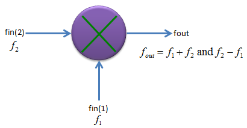
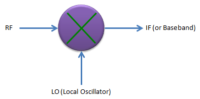
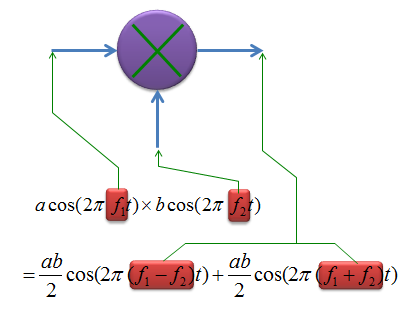
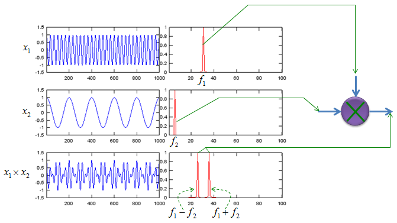
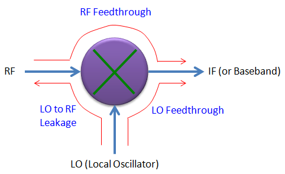
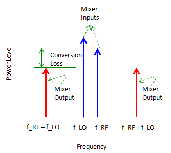
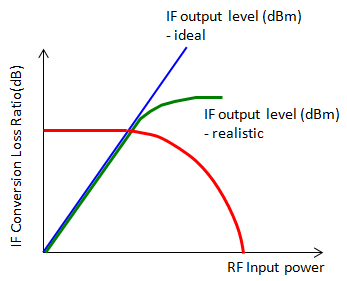

|
RF - Mixer Home : www.sharetechnote.com |
|
Mixer can be called as a 'Frequency converter' or 'Frequency Translater'. It converts the frequency of an input signal to another frequency. The principle of the mixer is very simple as shown below.
As you see, it has two input ports and two signals (in most case with different frequencies) comes in and produce one output signal which is generated by multiplying the two input signals. It means a mixer is just a component which multiplies two input signal. If you multiply two signals with different frequency, it produce a composite signal with the two frequencies, one of them is the sum of the two input frequencies and the other is the differences of the two frequencies. It is law of physics. (I don't know about your case. In our curriculum, I recal we learned this principle in high school physics class).

In most real application, one of the input port of a mixer is for RF input and the other port is for Local osciallator as shown below. As the result of the multiplication (mixing), you would get a frequencies, the frequency of which is lower than both inputs. Actually you will get two frequencies of the output, one is lower frequency than the two input (determined by the difference of the two input frequency) and the other one is higher frequency than the two inputs (determined by the sum of the two input frequency), but in most case we use the lower frequency part and filter out (remove) the higher frequency product. With this principle and by changing the frequency of LO, you can change the input RF frequencies to any frequencies you want (at least in theory) and this is the main function of a mixer. 
Now let's think about the principle of mixer in mathematical perspective. Don't get panic, this is just a high school math -:). As I described above, what mixer is doing is just to multiply two signals. If we assume that we have two signals expressed as a cos(2 pi f1 t) and b cos(2 pi f2 t). The multiplication of these two sinosodial function produces another sinosodial function which has two frequency component as shown below.

If you plot the inputs and outputs of a mixer in both time and frequency domain, you would get following graphs.

Ideal vs Real Mixer
Like any other components, for Mixer as well, there would be some gaps between ideal behavior and real device. If you are mixer developer/designer, your job is to improve the behavior as close as the ideal behavior and if you are just user of the component, you job is to find out the device which fits the best fit your requirement. I will put some plots later showing the deferences between the ideal mixer and real mixer. I was trying to find measurement result of very poor mixer but I didn't get it. There would a lot of ugly devices but hard to find the detailed measurement result for those ugly device -:)
Now let's think of what kind of factors are involved in producing non ideal behavior of a mixer. Most common factors are shown below and these are the factors that all of designer and users wants to get rid of. The factors shown here are produced by those signal component which directly reaches the other ports without going through operation process of the mixer.

RF feedthrough : This is generated by the component of RF input signal reaching directly to IF (output) port without going through mixer's operation block. LO feedthrough : This is generated by the component of LO signal reaching directly to IF (output) port without going through mixer's operation block. LO to RF leakage : This is generated by the comonent of LO signal reaching to RF input port without going through mixer's operation block.
Of course, the less you have this kind of factors, the better mixer you have.
There is another aspects of real mixer which is different from ideal case. That is about output power. As shown in the mathematical model of the mixer at the top, in ideal case the output power of mixer is geometric average of the two input power (i.e, ab/2), but in reality the output power is smaller than the theoretical value. If you look at the power of RF input, the output power (IF power) tend to be lower than the RF input power. The difference between the RF input power and IF output power of a mixer is called 'Conversion Loss'.

What would cause the conversion loss of the mixer ? It is mainly because a mixer also has non linear operating region as we saw in Amplifier. Conversion Loss gets larger as the RF input power to the mixer goes deeper into non linear operating region.

|